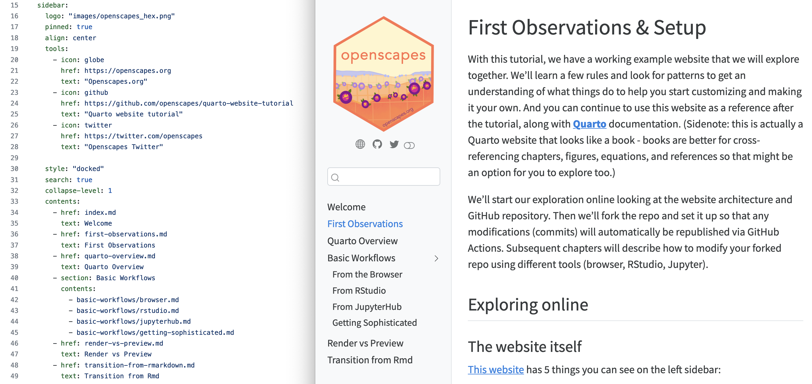

Quarto workflows
Basic Workflow
How do you work in Quarto? You can use whichever tool you’re comfortable with (RStudio, Jupyter, GitHub, VS Code, etc). Developing your quarto site will have the same basic workflow, no matter which tool you use. It is very iterative, and each is explored more below.
- Authoring: write text, code, images, etc in a file. Supported files include
.md,.Rmd,.qmd,.ipynb… - Update
_quarto.ymlas needed (for example, if you’ve created a new file you’d like included in your site) - Render individual files and/or the whole website
- Repeat, repeat, repeat
- Commit and push your website to GitHub, your updates will publish automatically!
- Repeat all of the above to make the website as you’d like!
Note: if editing from your internet browser we won’t render in Step 3. That step will not be separate, but combined with Step 5, which will only require a commit, not a push.
Update _quarto.yml
Let’s have a closer look at the _quarto.yml file.
This type of file (.yml or .yaml) is written in YAML (“Yet Another Markup Language”). You’ll be able to shift the arrangement of webpages by reordering/adding/deleting them in the _quarto.yml file following the patterns you see in this example.

_quarto.yml and website side-by-sideNotice that there are multiple ways in the _quarto.yml for you to include a file in your website. For example, in the above image, the “First Observations” we see in the left sidebar of the published website (right image) is represented in _quarto.yml (left image) over two lines, with line 36 indicating the file reference and line 37 indicating the text to show up in the left sidebar. However, “From RStudio” is only represented in one line of _quarto.yml, on line 43. This represents two strategies for including a file in your website. By default, the title of a specified file will show up in the website’s sidebar, which is what is happening with the “From RStudio” example. If you would like more control over what is written in the sidebar vs the title of your files, then the approach we took with “First Observations” is what you’ll want to do: you’ll see that only “First Observations” shows up in the sidebar as we specified in _quarto.yml, but the page’s title says “First Observations & Setup” (which in our preference was too long for the sidebar).
As you modify _quarto.yml, the most important thing to know is that spacing matters. Pay attention to whether text is indented by one, two, four, or other spaces, and make sure you follow it; if your site is not looking as expected it is likely a silent error in your YAML. Some text editors like RStudio provide debugging support for YAML and are highly recommended to save you time and heartache.
Install Quarto
https://quarto.org/docs/get-started/ describes how to install Quarto, which will depend on your operating system. We’ll walk through installation for each tool in the next chapters.